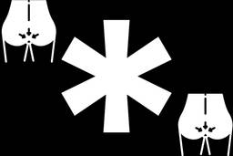
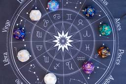
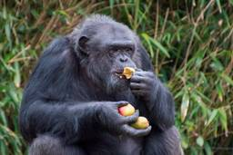

ナゾロジー
https://nazology.kusuguru.co.jp
身近に潜む科学現象から、ちょっと難しい最先端の研究まで、その原理や面白さを分かりやすく伝えられるようにニュースを発信していきます。最新の科学技術やおもしろ実験、不思議な生き物を通して、もう一度、皆さんの心にナゾを解き明かす「ワクワクの火」を灯したいと思っています。
フィード
「食欲をコントロールするダイエット」朝食にタンパク質をしっかり摂るとお腹が減らない 2
2
ナゾロジー
痩せるためには、摂取カロリーよりも消費カロリーを増やす必要があることは、多くの人が知っている当たり前のダイエット情報です。 しかし、痩せたいと日々願っているにもかかわらず、ついつい食べ過ぎてカロリーオーバーになってしまう人は多いでしょう。 では、どうすれば日々の摂取カロリーを効果的に抑えることができるのでしょうか？ 実はダイエットが上手く行かない原因は、逆に食事を我慢しすぎているところにあるかもしれません。 本記事では、食欲をコントロールし、健康的に痩せるためにタンパク質を摂取することのメリットについて詳しく説明します。
3時間前

肛門は「精子を放出する穴」から進化した可能性がある 1
ナゾロジー
ノルウェーのベルゲン大学（UiB）で行われた研究によると、私たちの身体にとって当たり前の存在である「肛門」は、実はもともと精子を放出するための穴から進化したかもしれないという。 もしこれを初めて耳にすれば、多くの人が思わず首をかしげたくなるかもしれません。 しかしながら、最近の調査では、一見突飛に思えるこの説を裏づける証拠が少しずつ集まってきているのです。 いったい具体的にどんな発見があったのか、そしてなぜ肛門が「精子を出す穴」と深く関係するようになったのか、気になりませんか？ この研究の論文は、2025年10月24日付で科学雑誌『Nature Ecology & Evolution』に掲載されています。
12時間前

知能が低く低学歴な人ほど占星術を根拠があると信じやすい 4
ナゾロジー
占星術の悪口ではありません。 アメリカのミネソタ大学（University of Minnesota Twin Cities、UMN）で行われた研究によると、占星術を科学的だとみなす人々には明確な傾向があるという。 その傾向とは、“知能や学歴が低いほど占星術を科学的な根拠があると信じやすい”というもの。 結果だけ見ると少し衝撃的かもしれませんが、決して一律に「頭が悪いから占星術を信じてしまう」という短絡的な話ではありません。 とはいえ、占星術そのものに科学的根拠が乏しいことは、長年多くの科学者が指摘してきたところ。 にもかかわらず、若い世代を中心に占星術の人気は根強く、スマホアプリで運勢や相性をチェックする人も少なくありません。 この“科学からは否定されがちなのに、なぜこんなに多くの人が占星術を信じるのか”という疑問は、占星術だけでなく、私たちが疑似科学やオカルト的なものに惹かれる理由を…
13時間前
「あなたの一番古い記憶は？」人は覚えていても2歳以前の記憶にアクセスできなくなっている 86
ナゾロジー
皆さんが思い出せる最も古い記憶はいつ頃のものでしょうか。 稀に「母親の胎内にいたときを覚えている」という方もいますが、ほとんどの人は2〜3歳以降のことだと思います。 このように人生初期（0〜3歳頃）の記憶が抜け落ちている現象を「幼児期健忘（infantile amnesia）」といいます。 ただ、最近の研究では人間の自意識は4カ月頃から発達すると報告されており、ほとんどの人が2〜3歳以前の記憶を思い出せない理由はよく分かっていませんでした。 この疑問に対して、アイルランド・ダブリン大学トリニティ・カレッジ（TCD）の研究チームは、私たちが人生初期の記憶を喪失しているわけではなく、アクセスできない状態になっているだけである可能性を示唆する研究結果を報告しています。 さらに驚くべきことに、幼年期の記憶にフタがされるかされないかは、妊娠中の母親の免疫反応に大きな要因があったといいます。 研究の…
16時間前
ドーパミンは何かを求めるときに人の動きを速めることが判明
ナゾロジー
期待していた作品の発売日などになると、つい足取りが軽くなったり、お店へ向かう間ずっと動作が速くなっていた、なんて覚えはないでしょうか？ 一方で、気乗りしない作業に取り掛かるときは、どうしても動きが緩慢になってしまいがちです。 こうした私たちの「やる気」と「動作の速さ」の密接な連動は、脳内の伝達物質「ドーパミン」が関わっていると考えられてきましたが、その具体的な仕組みには未解明な点が多く残されていました。 この日常的な疑問に対し、米国コロラド大学ボルダー校（University of Colorado Boulder）のコリン・C・コービッシュ（Colin C. Korbisch）氏らの研究チームは、ロボットアームを用いた実験により、人間が目標に向かって手を伸ばす速さが、「どれくらい報酬を期待していたか」や「結果が予想より良かったか悪かったか」に応じてどう変化するか調査を行いました。 する…
17時間前
子供の頃に歯ブラシをサボると、大人になって虚血性脳卒中のリスクが高まる
ナゾロジー
子どもの歯はやがて大人の歯に生え変わる、という事実を知って「どうせ生え変わるなら、乳歯のうちはそんなに神経質に歯ブラシしなくてもいいんじゃない？」と考える人は多いかも知れません。 確かに生え変わるなら、子どもの頃の歯の健康は大人になった後の健康とは無関係のような印象を受けます。 しかし、北欧デンマークのコペンハーゲン大学（University of Copenhagen）のニコリン・ニガード（Nikoline Nygaard）氏ら研究チームによると、約57万人という非常に大規模なデータを用い、子どもの頃の歯科記録と成人後の発症記録を長期にわたって照合した結果、子どもの頃に重度の虫歯や歯ぐきの炎症（歯肉炎）を経験した人は、大人になってから心筋梗塞や虚血性脳卒中などの動脈硬化性心血管疾患を発症する可能性が高くなることを発見したという。 私たちの口の中で起きているトラブルは、単に歯だけの問題に…
1日前
”ある音”を1分間聞くと「乗り物酔い」を軽減できる可能性 52
ナゾロジー
週末になると「どこに出かけようか」と心が躍ります。 ドライブで自然の中に出かけたり、少し遠出して温泉に行ったりと、楽しみは尽きません。 でも、ふと頭をよぎるのが「車に酔って、半日寝込むことになったらどうしよう…」という不安です。 助手席や後部座席に乗ってスマホを眺めているうちに気分が悪くなり、せっかくの予定が台無しになったという経験、あなたにもあるのではないでしょうか？ そんな悩みを解決するかもしれない、驚きの研究成果が名古屋大学から発表されました。 なんと「たった1分間、特定の音を聞くだけで、乗り物酔いを軽減できる可能性がある」というのです。 この研究成果は、2025年3月25日付の『Environmental Health and Preventive Medicine』誌にて発表されました。
1日前
【人類でただ一人】宇宙から落下した「スペースデブリ」が直撃した女性 1
ナゾロジー
スペースデブリとは、宇宙空間では寿命を終えた人工衛星が残す破片などの「宇宙ごみ」を指します。 実は人類史上、地球に再突入してきたスペースデブリに当たったことが記録されている人物が1人だけいます。 それはアメリカ在住の女性、ロッティ・ウィリアムズ（Lottie Williams）さんです。 彼女がスペースデブリに当たったのは、1997年1月22日のことでした。
1日前
1年と1日限定で「お試し結婚」する中世アイルランドの祭りとは？
ナゾロジー
昨今は恋愛リアリティショーがブームです。 見知らぬ男女が一定期間だけ共同生活を送り、互いの相性を確かめながら恋愛関係を築いていくという形式は、多くの人の関心を集めています。 しかし実は、「まず一定期間関係を試してみる」という発想は、現代に突然生まれたものではありません。 はるか昔のヨーロッパ、とりわけ中世のアイルランドには、「1年と1日だけ結婚する」ことができたと伝えられる不思議な慣習がありました。 その舞台となったのが、ケルトの収穫祭「ルーナサ（Lughnasadh）」です。 この祭りでは、若い男女が出会い、一定期間だけ結婚関係を結ぶ「試験結婚」のような習慣があったと伝えられています。 一体どのようなルールだったのでしょうか？
2日前

「1日ビール1本」相当のアルコールをウガンダのチンパンジーが摂取していると判明
ナゾロジー
「毎晩のビールがやめられない」という人は少なくありません。 同じように、あるチンパンジーたちも定期的にアルコールを摂取しているようです。 アメリカのカリフォルニア大学バークレー校（UCB）の研究チームは、ウガンダの野生チンパンジーの尿を分析し、彼らが発酵した果実から相当量のアルコールを取り込んでいることを確認しました。 調査では、人間の標準的なアルコールドリンク1杯強に相当する量のアルコールを、日常的に摂取している可能性が示されました。 この研究は2026年2月25日付の学術誌『Biology Letters』に掲載されています。
2日前